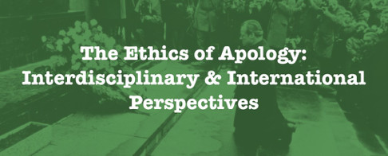

同声传译 | 既往不咎？“向同性恋道歉”中的历史（上）——被抹除的历史
往期回顾：
To Forgive and Forget? Homonationalism,
Hegemony, and History in the Gay Apology
既往不咎？“向同性恋道歉”中的
同性恋民族主义、霸权主义与历史
[本文发表自论坛—道歉伦理学：跨学科&跨民族视角，作者Steven Maynard]

[道歉伦理学：跨学科&跨民族视角]
第三部分
历史 (History) （上）——被抹除的历史
有了那些政治背景和批判，我现在想谈谈历史。“历史”在同性恋道歉中的地位如何？人们似乎普遍认为，道歉运动本身将成为一段重要的历史。这次道歉将“代表加拿大历史上性少数群体的最大进步之一”；“自由党政府计划在未来几个月和几年实施的改革是该国历史上对性少数群体取得的最大进步之一，并且将加拿大置于解决这一问题的国家的前列。”[50]
但“历史”在同性恋道歉中的实际地位却更加模糊。一方面，历史是绝对完整的。它是道歉运动发生的土壤和原因。另一方面，自相矛盾的是，政府在进行对历史不公对待的道歉时还掺杂着对回顾过往历史的不耐烦。正如博伊森诺所说：“我们必须正视过去的错误，因为这些错误是实实在在的。但我们也必须注意如何建设未来。”[51]
“我们被要求在道歉信上的字迹干透之前就让事情翻篇。让我们来看看另一个例子：2017年8月，蒙特利尔与该城警察，就长久以来警方突袭同性酒吧和派对而向该城市的LGBTQ人群道歉。前市长丹尼斯·柯德尔(Denis Coderre)表示，他们迫切地希望“今天就公开道歉，这是因为我们想让事情翻篇。”[52]
甚至《公众社会报告》也从未来的角度看待过去(“我们必须在展望未来的同时向过去致敬”)，都是为了“将这些罪行从历史书中抹去”。在尚不确定是否要删除犯罪记录的讨论过程中，《报告》建议进行“全面删除”，即“删除所有定罪记录”，将其从所有数据库中删除，并确保“删除的定罪不在任何背景中公开”。[53]“我们要求道歉网络”组织要求政府确保“过去收集的与清洗运动有关的数千名加拿大人的文件将被删除，以保护过去、现在和未来加拿大居住者的生活。”
该网络还要求那些“被清洗或被监视的人……必须有权在这些个人记录被销毁之前查看这些记录”[54]很明显，这样做的目的是为了防止删除记录的文本或电子痕迹之后，可能会对一个人未来产生的任何负面影响。但许多减刑将不得不依赖刑事定罪的档案记录。《报告》和网络当然不支持抹去、删除或销毁归档文档，而且，如果要将警察和法律迫害的细节写入历史书中，就必须向研究人员公开这些文档。《报告》的建议之一是“纪念这些历史的不公”。[55]
道歉运动对于这个国家的一个主要好处是，一旦一个可耻的过去被承认和道歉，那么这段过往就可以被销毁或抹去，这一页就这么被翻过去了，我们被要求展望未来，继续前进。你最后一次听到政府对日本人被遣送到集中营和向中国人征收人头税发表实质性言论是什么时候?想想吧，这两个人群分别在1988年和2006年接受了全国性的道歉。删除数据库或销毁历史文档只会让忘记过去变得容易得多。
为应付有可能伴随道歉而来的故意遗忘，一种方法是利用道歉过程来收集和保存新的证据。《报告》发起了“为后世记录个人遭受的不公正故事的倡议”，而博伊森诺则坚持“这些故事必须被讲述，并成为官方记录的一部分”。[56]博伊森诺有什么具体的计划来鼓励和收集故事?他的咨询委员会的职能之一应该是促进“与那些受到过去错误影响的人进行对话”。[57]尽管人们一直在谈论与那些受到过去错误行为影响的人进行对话，但委员会中没有任何这一人群的代表。博伊森诺的办公室已经运转了一年有余。他又收集了多少故事呢？此外，在道歉发生之后，他们还有什么动机去收集更多的故事呢?
博伊森诺坚持认为，这是“我们社区的真理和一次让人们说出自己的心声的和解机会”。[58]真相与和解委员会(TRC)的遭遇在这里有指导意义【1】，最高法院近来做出一项决议，允许销毁3.8万名寄宿学校幸存者的自述，这一宝贵记录由真相与调节委员会制作。如果道歉过程确实成功地从那些经历过政府反同性恋清洗运动的人那里收集了自述，那么接受道歉之后这些记录的命运会怎样呢?它们会成为官方记录的一部分，还是会因为承诺保密而被销毁?无论我们谈论的是历史文件还是最近的口述，其实有办法在保护隐私的同时保存记录。[59]（译注【1】: 加拿大政府于2009年建立真相与和解委员会，用于调查加拿大境内印第安寄宿学校中发生的文化灭绝与虐童，大约有15万儿童进入各个印度安寄宿学校，死亡儿童数目保守估计超过6000人。）
向同性恋道歉运动应该向政府提出一些要求，其一是政府应当提供慷慨的资金和其他资源，以促进进一步的同性恋历史研究。“我们要求道歉网络”长期以来的诉求中就包含要求公开所有与公务员和军事清洗有关的政府历史文件。其次，政府应该为基于酷儿社区的档案和历史项目提供资金，这些项目非常有利于把这段历史交到最需要它的人手中。
政府档案部门也应该有资金支持，来整理、描述和提供大量未经加工的法庭历史记录，正是这些档案让我发现了法院关于发生在男性之间的性侵犯档案文件，我花了很多年的时间来研究这些文件，如今它们成了向同性恋道歉运动的核心。
在正在进行的同性恋道歉运动中，公众（这是道歉运动最为依赖的阵营）对道歉所依据的历史记录的讨论与我所知道的道歉内容之间的脱节，一直令我感到震惊，公众的讨论聚焦于道歉的范围和内容。这些几乎没有或更有可能是完全没有接受过历史训练的联邦官员，竟然试图搜索和解释旧的法庭文件，这种想法实在是有点可怕。
例如，自政府宣布有意对历史记录进行审查以来，联邦官员开展的幕后工作中，一份通过“获取信息”计划而获得的内部备忘录显示，他们能找到的最古老的案件发生在1939年10月。[60]鸡奸罪在1859年被写入加拿大法律，在1890年被列为严重猥亵行为，最古老的案件怎么可能在1939年才发生呢?
官员们正在寻找最容易找到的资料，指的是那些容易获取但当下被限制在警察数据库中，而不是那些省级档案馆中数百箱未经处理的法庭记录。在我自己对这些档案箱的研究中，仅安大略一个省，我就发现了近400个案例，涉及近800人，这还仅仅是1880-1940年间。这些记录带来的的挑战是多种多样的。特别是许多司法管辖区和各级法院的记录已不复存在。
如果你想要赦免，但是你的定罪记录已经不存在了怎么办?在那些幸存下来的文件中，有许多是残缺的。许多只包含姓名、日期和判决。在许多情况下，没有证词或审判笔录来披露案件的细节。如果没有细节，我们怎么知道是否值得赦免?
在现存的有着丰富细节的记录中，我们能在这些法庭文件中找到谁?是一个除了不幸被卷入国家严厉的反同性恋机构之外，在其他方面都堪称楷模的人吗?有是有部分这样的人，我怀疑在大多数加拿大人的想象中，贾斯丁道歉的对象是这类值得尊敬的同性恋者。但这种性格的人并不经常出现在法庭记录中，因为他过着小心谨慎的生活，从未引起警察和法律的注意，因此也没有出现在历史记录中。
那么，我们在法庭文件中发现了什么呢?在向媒体就历史案件的性质发表评论时，金斯曼表示，“绝大多数的案件中参与者是自愿的。”[61]的确，很多是这样的，但我担心这并不是事情的全貌。在我的研究中，我发现男人会用暴力强迫别人接受他们，受害者通常是年轻男孩。有些男人用他们身体和性来引诱其他男人，然后他们抢劫或殴打被害者。
在一些案例中，男性利用他们在学校、教堂和儿童援助协会等机构中的权力地位，与男性青少年发生性关系。与此相反，一些男孩和男性青年通过向成年男性提供性服务，以换取金钱、剧院入场券或曲棍球棒。许多案件涉及所谓的公园、巷道和厕所的公共场所性行为，通常涉及两名以上的男子。[62]简而言之，我们发现的法庭记录几乎完全是与皮埃尔的声明背道而驰,他所呼吁的两个成年人在私密的卧室中自愿进行的性行为。但事实是:和自愿相反，这里面有武力胁迫的参与；和成年人相反，还有许多未成年男孩和青年的身影; 和两人伴侣，还有群体性行为; 和私密相反，性行为经常发生在公共场所。
在针对于向同性恋道歉的讨论中，人们经常提及所谓的历史记录带来的“阻拦”，但这些记录其实更像是一堵解释性的防火墙。在道歉运动中，所有的参与者都非常谨慎地表明，不能向那些实行性暴力或娈童的男性道歉，也不能赦免他们。然而，几乎没有人持续地考虑历史资料中是否可以梳理出这些区别，以及又该如何操作。
司法竞争极有可能导致如下情况：实际上可能是双方自愿的性交却在法庭上遭到曲解;同样，涉及强迫的性交却被认为是你情我愿的。由于严重猥亵这一罪名将所有男子性关系都定为刑事罪行，而不论它们是公开的还是私下的，无论当事人的年龄或性接触的情况如何。因此双方都很容易受到惩罚。
所以一个案件中，如果存在这种情况：一个成年的男人利用他在一个机构中的权位来为他和青年男性性交大开方便之门, 那位青年不被视为受害者, 法律甚至称他为性犯罪的“帮凶”。许多这样的青年被送到管教所和培训学校。考虑到这样的案例是发生在法律区分滥用信任与权力之前，在这种情况下我们是同时向成年和青少年男性道歉吗?在涉及强迫或暴力的案件中，通常受害者和施暴者都一起被送进监狱。我们是在向双方道歉吗?法院记录所提供的判决和案件解读，使得揭露个别案件的“真相”几乎是不可能的。
在这一点上，我同意吉斯曼的看法，他在上面引用的同一份报告中还指出，在许多情况下“你无法找出事情的真相”。然而，为了赦免或清除犯罪记录而对历史记录进行审查，是需要逐个回顾个体案件的。所以只能说，祝你好运。
历史文献提出的一个同样艰巨的挑战是关于同性恋道歉中的“同性恋”，也就是关于身份的问题。严重的猥亵和鸡奸并没有将同性恋这一性取向定为有罪，而是将性行为定为犯罪。例如，鸡奸不仅包括男人之间的性行为，也包括男人和女人之间的，以及人和动物之间的。
30多年来，酷儿史学一直坚持认为，在19世纪和20世纪的大部分时间里，许多(如果不是大多数的话)与其他男性发生性关系的男性并不认同同性恋或同性恋身份。在关于同性恋道歉的公开讨论中，同性行为和同性恋及其他身份之间的关键区别没有得到充分阐述，其概念上的混乱往往在一句话中就能体现出来。仅举一个例子: 特鲁多总理“应该赦免在1969年同性恋行为合法化之前被判犯有严重猥亵罪的数千名男同性恋者。”
他们唯一的罪恶就是做自己。“[63]我们从性身份(男同性恋者)到刑法类别(严重猥亵)再到性行为(同性恋行为)，再回到身份(成为他们自己)。”《报告》尽管做出了令人钦佩的努力，基于广泛的身份认同(包括本国的双性人和其他形式的性别)，制定了一份“开放的、包容的”道歉，但这份报告仍然依赖于“同性恋”的同质化和非历史意义上的使用，就像“19世纪的同性恋生活”一样。[64]这不仅仅是一种语义。
这是对历史行为者性向的擅自推断，并通过刁钻的方法来强行使这些支离破碎的记录向大众揭露这些演员的性向秘密。在这些历史记录中浸淫了近三十年之后，我仍然不确定，如果有的话，它们能揭示出什么关于同性恋或同性恋身份的信息？那么，当有关同性恋道歉的讨论充满信心地断言并投射出“受迫害的加拿大同性恋”或“过去对同性恋的迫害”时，这意味着什么呢? [65]
在1969年之前的大部分时间里，同性恋道歉的主要对象是那些被消失的同性恋者。
有人承认，审查个别记录或全面赦免将充满问题。[66]但是全面道歉呢?当贾斯汀站在下议院发表道歉时，至少其中一部分是关于1969年之前被定罪的人，他会带我们回顾所有历史上的区别吗?他可能会提到“彼此同意的同性恋关系”，但正如我刚才指出的，这说起来容易做起来难。
这只是其中的一个问题。在为鸡奸指控的起诉道歉时，同性恋道歉的对象会包括那些有肛交经历的“异性恋”男女吗?那么更多出现在鸡奸指控中马、牛和猪呢?这些人和他们的四条腿的朋友的记录是否也被删除了，他们的罪行是否被首相的道歉掩盖了?
我想这不是道歉运动的本意，但考虑到在整个道歉运动中鸡奸和男同性恋之间错位的历史等式，这是有可能的。还有许多其他的考量，举例来说，大部分异性恋加拿大人是否准备好向下列这些人道歉？他们有的在联合车站潮湿、臭气熏天的地下厕所从事集体手淫，有的是性情温和的童子军领袖，用铅笔在一张白桦树皮上对他的心上人倾注所有爱意。酷儿们自己真的准备好正视过去的酷儿了吗?我觉得恐怕不是这样的，这让我想起了在同性恋道歉运动中最让我抓狂的一个词:“名誉恢复”(rehabilitation)。
《报告》灵感来自于“参议员辛克莱的真相与恢复报告”，并直接引用了真相与和解委员会主席辛克莱。[67]据我所知，委员会没有任何一份报告以“名誉恢复”为名义。委员会的实际术语当然是和解，这是一种奇怪的退步。名誉恢复具有法律或准法律意义:在一段不受欢迎的时期后恢复以前的特权或名誉的行为，或在监禁一段时间后为重新进入社会作准备。
但名誉恢复也可以更普遍地意味着恢复一个人的健康或正常的生活，名誉恢复所暗指的正常化一面困扰着我。在酷儿的过去能够呈现在全国面前，在酷儿接受道歉之前，酷儿们必须被恢复和被正常化。我们可以在埃弗雷特·克利佩特 (Everett Klippert)的例子中看到这一点。
翻译by Landy
校译 by孑子
参考文献详见原文
未完待续
请关注酷儿论坛后续推送
To Forgive and Forget? Homonationalism, Hegemony, and History in the Gay Apology
既往不咎？“向同性恋道歉”中的同性恋民族主义、霸权主义与历史